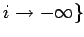
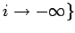

Inhalt Index DeskTop Bronstein

 Dynamische Systeme und Chaos Gewöhnliche Differentialgleichungen und Abbildungen Zeitdiskrete dynamische Systeme Invariante Mannigfaltigkeiten
Dynamische Systeme und Chaos Gewöhnliche Differentialgleichungen und Abbildungen Zeitdiskrete dynamische Systeme Invariante Mannigfaltigkeiten


Der Satz von HADAMARD und PERRON für zeitdiskrete Systeme in  beschreibt Eigenschaften der Separatrixflächen:
beschreibt Eigenschaften der Separatrixflächen:
Ist x0 eine hyperbolische Ruhelage von (17.3) vom Typ  , so sind Ws(x0) und Wu(x0) verallgemeinerte Cr-glatte Flächen der Dimension m bzw. , die lokal wie Cr-glatte Elementarflächen aussehen. Die Orbits von (17.3), die für oder
, so sind Ws(x0) und Wu(x0) verallgemeinerte Cr-glatte Flächen der Dimension m bzw. , die lokal wie Cr-glatte Elementarflächen aussehen. Die Orbits von (17.3), die für oder  nicht gegen x0 streben, verlassen hinreichend kleine Umgebungen von x0 für oder
nicht gegen x0 streben, verlassen hinreichend kleine Umgebungen von x0 für oder  . Die Fläche Ws(x0) bzw. Wu(x0) tangiert in x0 den stabilen Untervektorraum für  von bzw. den instabilen Untervektorraum für .
. Die Fläche Ws(x0) bzw. Wu(x0) tangiert in x0 den stabilen Untervektorraum für  von bzw. den instabilen Untervektorraum für .
| Beispiel |
|
Betrachtung des folgenden zeitdiskreten dynamischen Systems |
aus der Familie der HÉNON-Abbildungen. Die beiden hyperbolischen Ruhelagen von (17.23) sind und . Es sollen lokale stabile und instabile Mannigfaltigkeiten von P1 bestimmt werden. Mit der Variablentransformation geht (17.23) in das System mit der Ruhelage (0,0) über. Den Eigenwerten der JACOBI-Matrix Df((0,0)) entsprechen die Eigenvektoren bzw. , so daß und  ist. In dem Ansatz
ist. In dem Ansatz  wird
wird  als Potenzreihe gesucht. Aus folgt . Dies führt zu einer Bestimmungsgleichung für die Koeffizienten der Zerlegung von , wobei k < 0 ist. Der prinzipielle Verlauf der stabilen und instabilen Mannigfaltigkeit ist in der folgenden Abbildung zu sehen (s. auch Lit. 17.5).
als Potenzreihe gesucht. Aus folgt . Dies führt zu einer Bestimmungsgleichung für die Koeffizienten der Zerlegung von , wobei k < 0 ist. Der prinzipielle Verlauf der stabilen und instabilen Mannigfaltigkeit ist in der folgenden Abbildung zu sehen (s. auch Lit. 17.5).